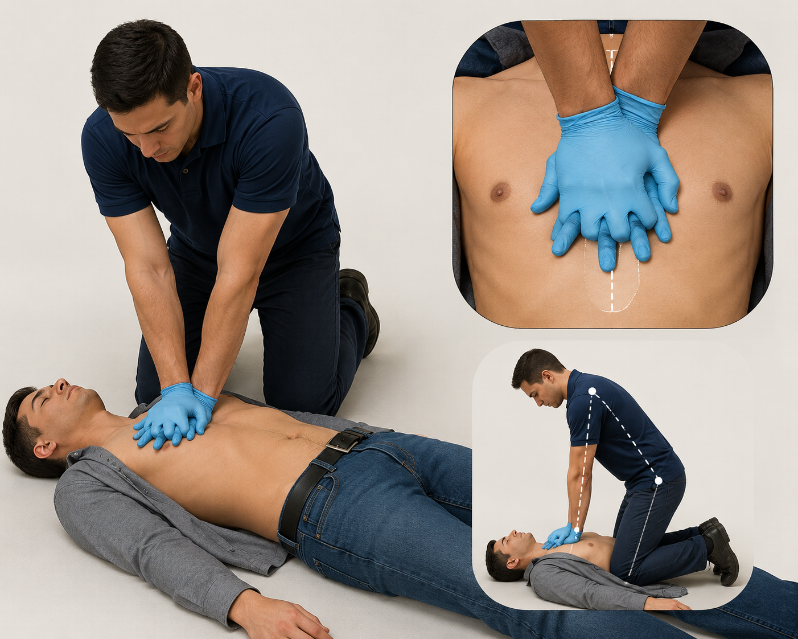
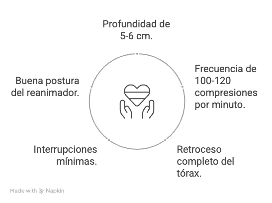

RCP de alta calidad
Buscá mantener la circulación de sangre mediante compresiones torácicas efectivas. La calidad importa más que la cantidad.
Posicionamiento del reanimador

El paciente debe estar boca arriba sobre una superficie firme. El reanimador se ubica a un lado del tórax. Coloca el talón de una mano en el centro del pecho, sobre la mitad inferior del esternón. Coloca la otra mano encima. Mantené los brazos rectos y los hombros alineados sobre las manos.
5 parámetros de compresiones de calidad

Video del paso a paso
Te invitamos a ver el siguiente video, el cual muestra el paso a paso de actuación ante una persona inconsciente que no respira normalmente.
Iniciá compresiones cuanto antes
Si la persona no responde y no respira normalmente, no esperés.
No comprimas sobre abdomen, costillas o parte baja del esternón
Solo el centro del pecho, en la mitad inferior del esternón.
Compresiones durante 30 segundos · manteniendo ritmo y postura
Practicar te ayuda a sentir el esfuerzo real y mantener la calidad.